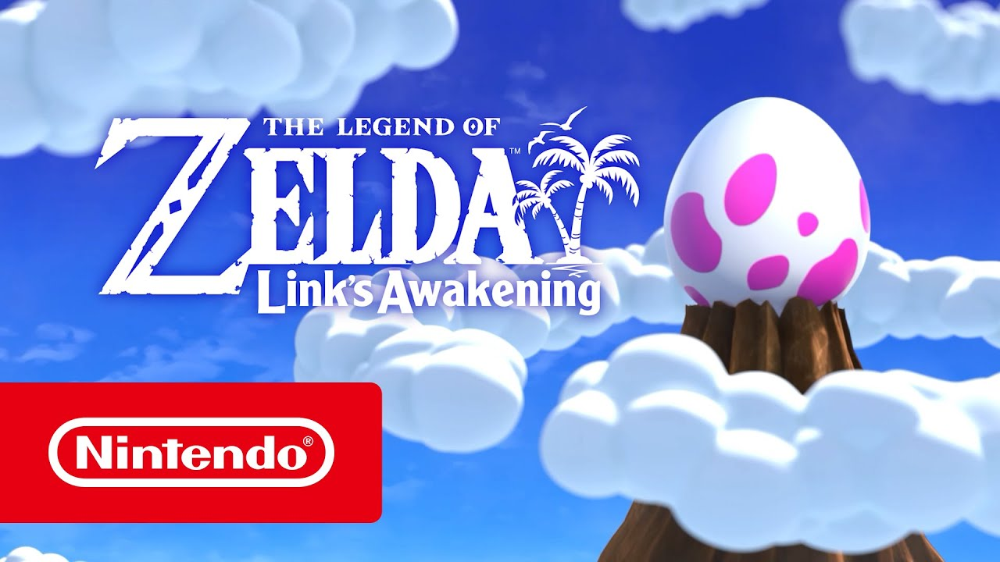
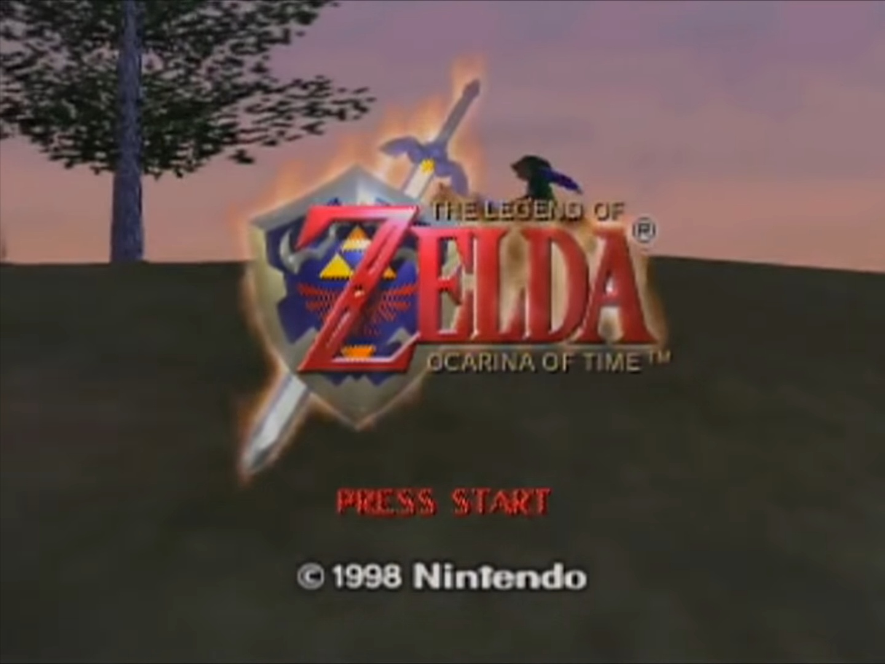
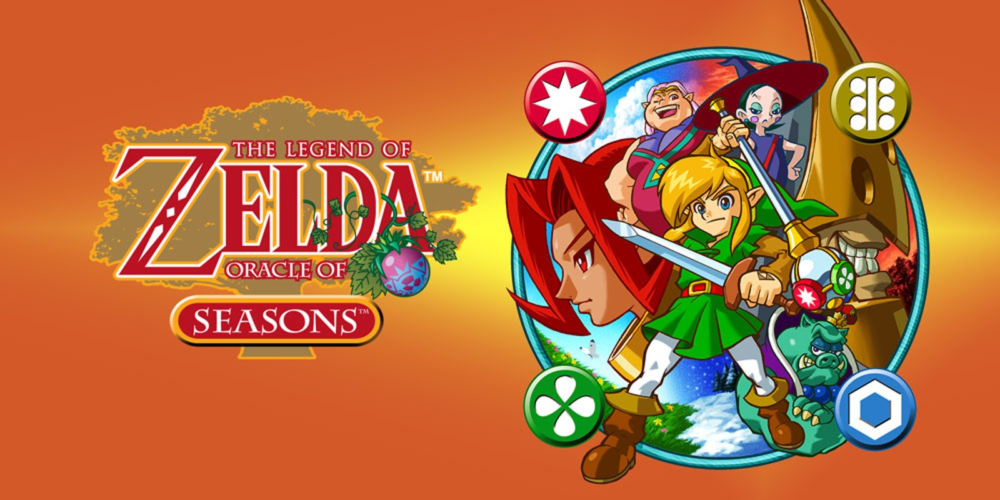
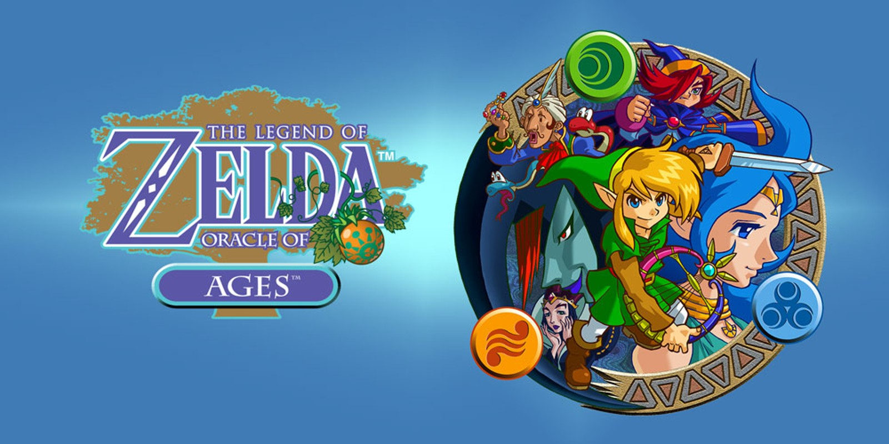
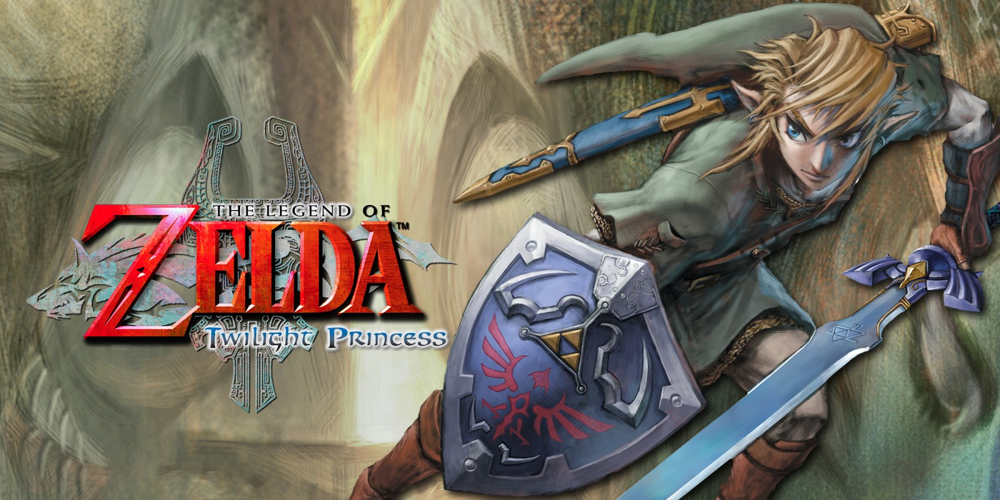
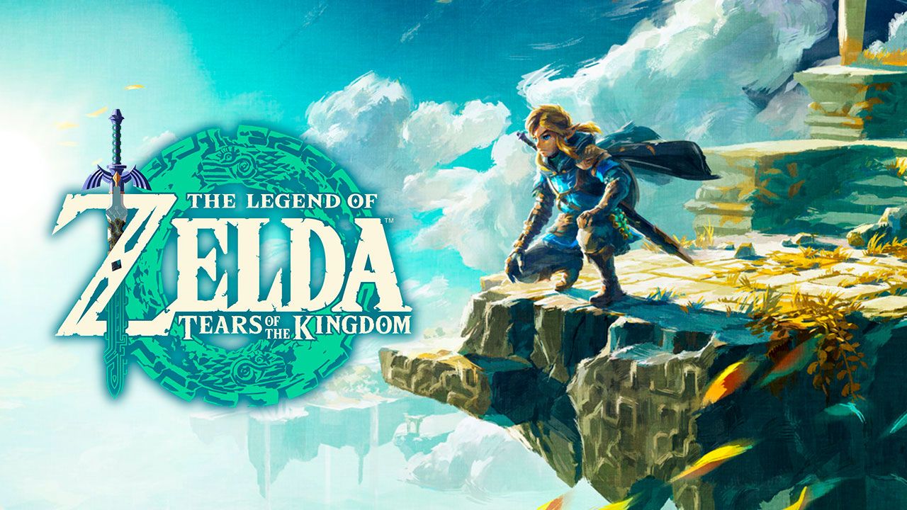

The Legend of Zelda (1986)

Este es el comienzo de la leyenda. La princesa Zelda divide la Trifuerza de la Sabiduría en ocho fragmentos para protegerla de Ganon, el Príncipe de la Oscuridad, quien ha robado la Trifuerza del Poder. Link, un joven que se despierta en el vasto reino de Hyrule, debe recuperar estos fragmentos, adentrarse en la Montaña de la Muerte y finalmente enfrentarse a Ganon para rescatar a la Princesa Zelda y restaurar la paz en la tierra.
Zelda II: The Adventure of Link (1987)

Seis años después del primer juego, Link descubre una marca en su mano. Impa, la nodriza de la princesa Zelda, le revela que esta marca lo destina a despertar a una antigua princesa Zelda que fue maldecida con un sueño eterno hace siglos. Link debe viajar a través de Hyrule para colocar los cristales en seis palacios y abrir el camino hacia el Gran Palacio, donde debe obtener la Trifuerza del Valor para combinar las tres reliquias y romper la maldición.
The Legend of Zelda: A Link to the Past (1991)

La historia se centra en la leyenda de la Guerra del Sellado, donde un grupo de sabios selló a Ganon y el Reino Sagrado convirtiéndolo en el Mundo Oscuro. El hechicero Agahnim, manipulado por Ganon, rompe el sello al capturar a las siete doncellas descendientes de los sabios. Link es llamado a rescatar a la Princesa Zelda y a las doncellas, viajando entre el Reino de la Luz y el corrupto Mundo Oscuro para empuñar la Espada Maestra y detener a Ganon antes de que obtenga la Trifuerza completa.
The Legend of Zelda: Link's Awakening (1993)
Tras derrotar a Ganon, Link naufraga en la misteriosa Isla Koholint. Para escapar, debe despertar al mítico Pez Viento que duerme en el Huevo Gigante en la cima de la montaña. A medida que Link recolecta los ocho Instrumentos de las Sirenas, se da cuenta de que la Isla Koholint y todos sus habitantes son parte de un sueño colectivo del Pez Viento. Despertarlo significa que la isla desaparecerá para siempre.
The Legend of Zelda: Ocarina of Time (1998)
Este título establece el origen de la Trifuerza y la maldición de Ganon. Link, el "Héroe del Tiempo", viaja siete años al futuro al abrir la Puerta del Tiempo usando la Ocarina del Tiempo y las Piedras Espirituales. Este acto permite al ladrón Ganondorf ingresar al Reino Sagrado y robar la Trifuerza, dividiéndola en tres partes. Link debe despertar a los Siete Sabios en un futuro oscuro dominado por Ganondorf para sellarlo y restaurar el tiempo.
The Legend of Zelda: Majora's Mask (2000)

En una búsqueda por su hada perdida, Link es arrastrado al mundo paralelo de Términa, donde la Luna está cayendo y amenaza con destruir la tierra en solo tres días. Skull Kid, poseído por el espíritu maligno de la Máscara de Majora, es el responsable. Link debe usar la Ocarina del Tiempo para manipular el ciclo de tres días, ayudar a los habitantes de Términa con sus problemas personales y recuperar los cuatro Gigantes que sostienen el mundo para evitar el apocalipsis.
The Legend of Zelda: Oracle of Seasons (2001)
Link es transportado mágicamente a la tierra de Holodrum por la Trifuerza. Allí, el General Onox, el Dragón de la Oscuridad, secuestra a Din, la Oráculo de las Estaciones. Al hacerlo, la magia del árbol de las estaciones se descontrola, sumiendo a Holodrum en el caos climático. Link debe usar el Cetro de las Estaciones para controlar el clima de Holodrum y derrotar a Onox para liberar a Din y restaurar el equilibrio.
The Legend of Zelda: Oracle of Ages (2001)
Link es enviado a Labrynna donde la hechicera Veran posee a Nayru, la Oráculo del Tiempo. Al poseerla, Veran puede viajar al pasado para manipular los eventos históricos de Labrynna y desatar la oscuridad. Link debe usar la Lira del Tiempo para saltar entre el presente y el pasado de Labrynna, corrigiendo las alteraciones temporales de Veran y finalmente sellarla para salvar a la Oráculo y el flujo del tiempo.
The Legend of Zelda: The Wind Waker (2002)

Cientos de años después de que el Héroe del Tiempo desapareciera, Ganondorf regresa. Debido a que el héroe no existe, los dioses deciden inundar Hyrule para sellar al mal, convirtiendo el reino en el Gran Mar. Link, un joven de la Isla Initia, se embarca en una aventura de exploración naval para rescatar a su hermana, que ha sido secuestrada por Ganondorf, y descubrir los restos del antiguo Hyrule sumergido.
The Legend of Zelda: Twilight Princess (2006)
El reino de Hyrule es invadido por la dimensión del Crepúsculo, sumiéndolo en la oscuridad y transformando a sus habitantes en espíritus. Link es arrastrado al Crepúsculo y transformado en un Lobo, donde conoce a Midna, un ser misterioso. Juntos, deben restaurar la luz al reino y enfrentarse al usurpador Zant, quien está sirviendo al verdadero maestro detrás de la invasión: un Ganondorf resucitado que fue sellado hace tiempo en el Reino del Crepúsculo.
The Legend of Zelda: Skyward Sword (2011)

Esta es la historia más antigua de la cronología. Los humanos viven en la ciudad flotante de Altárea, sin conocimiento del mundo de la superficie, devastado por el Heraldo de la Muerte (Demise). La Diosa Hylia reencarna como Zelda. Link, un caballero de Altárea, es elegido por la espada espíritu Fi para forjar la Espada Maestra y descender a la superficie para luchar contra Demise, estableciendo el ciclo de reencarnación entre el héroe, la princesa y el mal.
The Legend of Zelda: Breath of the Wild (2017)

Cien años antes, el reino de Hyrule fue devastado por el Cataclismo, un evento provocado por el regreso de Ganon (Calamity Ganon). El héroe fue gravemente herido y puesto en éxtasis, y la Princesa Zelda utilizó su poder para sellar a Ganon en el castillo de Hyrule. Link despierta sin recuerdos en un Hyrule post-apocalíptico, y debe recuperar su memoria, liberar a las Bestias Divinas que fueron corrompidas, y finalmente enfrentarse a Ganon para liberar a Zelda y al reino.
The Legend of Zelda: Tears of the Kingdom (2023)
Después de la derrota de Ganon, Link y Zelda exploran las profundidades del castillo de Hyrule, donde descubren el cadáver momificado de Ganondorf, cuya liberación desata un nuevo Cataclismo. La princesa Zelda desaparece y Link adquiere el brazo de Rauru, el primer rey de Hyrule. Link debe explorar las islas del cielo y las profundidades del subsuelo para encontrar a Zelda y a la vez detener a Ganondorf, quien busca poder para dominar toda la tierra de Hyrule.